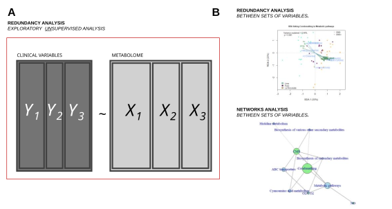
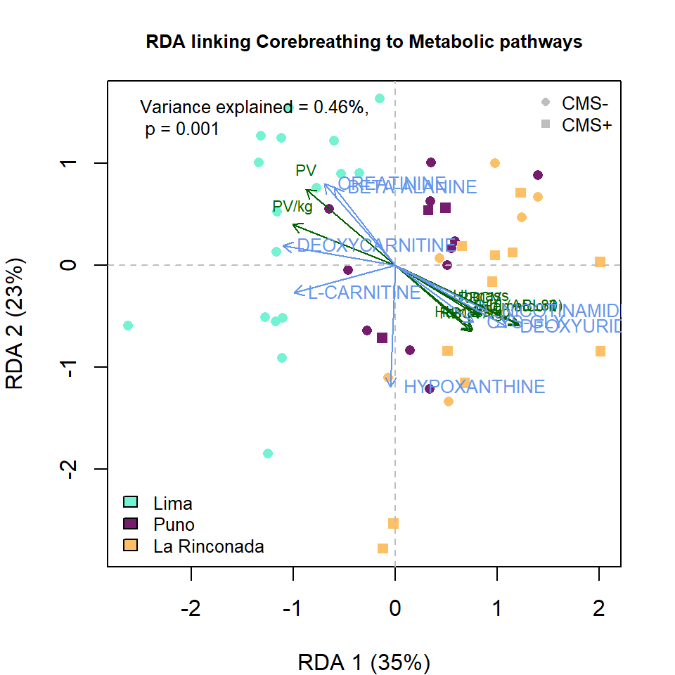
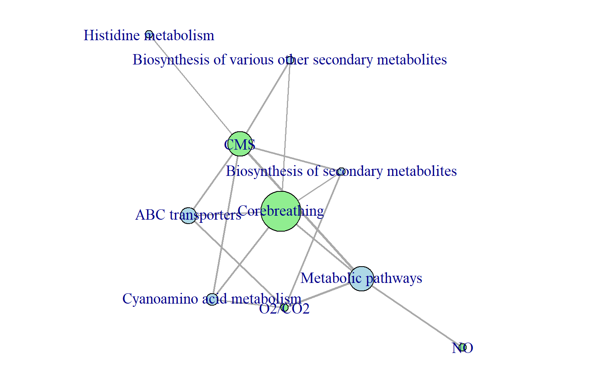
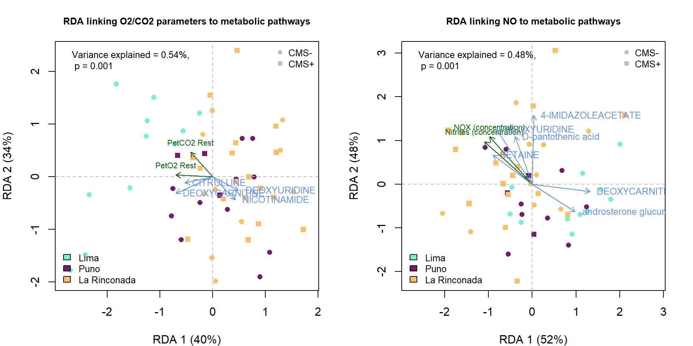

Chapter 6 Redundancy Analysis and Network
6.2 Defining the working data: \(X\) et \(Y\)
In this analysis, two sets of variables are defined. The matrix \(X\) corresponds to metabolomic features grouped by biological pathways, while the matrix \(Y\) contains clinical variables measured in the same individuals.
Both matrices are aligned using a common set of sample identifiers to ensure that each row corresponds to the same individual across datasets. Missing values in \(Y\) are handled by removing variables with excessive missingness.
Clinical variables are further organized into predefined groups reflecting physiological functions. Additional covariates such as sampling location and clinical status are encoded and used for visualization purposes.
## X - METABOLOME
X = lapply(clean_data$Metabolites_pathways_no_redondancy$X_list, function(x) t(x))
ID_in_X = rownames(X[[1]])
## Y - CLINICAL VARIABLES
Y = apply(data$PHYSIO$`Clinical data`[ID_in_X,], 2, as.numeric)
Y[which(is.infinite(Y))] <- NA
w = which((colSums(is.na(Y))<40))
Y = Y[,w]
groups = data$PHYSIO$`Groups of clinical variables`[w]
groups[5:6]="CMS"
y = factor(data$PHYSIO$`Clinical data`[ID_in_X,]$`City of testing`, levels = c("Lima" ,"Puno", "La Rinconada")) ## Altitude of residence
col.Y = factor(y, levels(y), paletteer::paletteer_d("tvthemes::Alexandrite")[4:6]) # Colors for plots
## CO-variates
pch.CMS = as.numeric(as.character(factor(data$PHYSIO$`Clinical data`[ID_in_X,]$`CMS groups`,
c("No CMS", "Mild CMS", "Mod-Sev CMS"), c(16, 15, 15)) ))6.3 Redundancy Analysis
The Redundancy Analysis (RDA) is a multivariate statistical technique exploring the relationships between sets of variables. RDA measures how much a group of variables (i.e., metabolomic function) are linked to a group of clinical varaibles.
RDA is composed of two steps; in the first one, the PCA of the clinical variables is performed; in the second step a canonical correlation analysis is computed that maximizes the correlation between the metabolites belonging to a specific function and the axis of the PCA of step 1.
The results of RDA can be interpreted in terms of relationships between both sets of variables. In the results, we obtained two statistics: (a) the adjusted explained variance (\(R^2\)) of Y (i.e., clinical variables) by the set of variables X (metabolites), and (b) the p value associated with the test where the null hypothesis is that \(X\) is linearly independent of \(Y\).

6.4 Example of Redundancy Analysis
The function rda_manual, available in the associated repository, implements this procedure. It requires several input arguments that must be carefully specified.
The argument Y corresponds to the matrix of response variables. In this example, a subset of clinical variables is selected based on a specific clinical group.
The argument X corresponds to the matrix of explanatory variables. Here, it represents metabolomic pathways, where each column corresponds to a metabolite and each row to an individual.
The arguments pch_sites and col_sites define graphical parameters used to represent individuals in the ordination plot. They encode additional metadata such as clinical status (here, CMS) and sampling location (here, altitude location).
The argument arrows_scale controls the scaling of the variable vectors displayed in the biplot, allowing better visualization of their relative contributions.
The argument sel.var defines a threshold used to select the most relevant variables for display. Only variables with sufficiently large contributions to the first two canonical axes are shown.
The function returns both numerical results and graphical outputs. The numerical output includes the adjusted explained variance and the p value associated with the permutation test. The graphical output represents the ordination of individuals and the contribution of variables in a reduced dimensional space. You can used the argument graph = FALSE to avoid the graphical output.
par(mar=c(4,4,3,2))
res.rda = rda_manual(Y = Y[, groups == "Corebreathing"], X = X$`Metabolic pathways`,
pch_sites = pch.CMS, col_sites = as.character(col.Y), arrows_scale = 2, sel.var = 0.3)
title("RDA linking Corebreathing to Metabolic pathways", cex.main = 0.8)
legend("topleft", legend = paste0("Variance explained = ", round(res.rda$partition[4,], 2), "%,\n p = ",
round(res.rda$partition[3,], 3)),bty = "n", cex = 0.8)
legend("bottomleft", legend = levels(y),
fill = paletteer::paletteer_d("tvthemes::Alexandrite")[4:6], bty = 'n', cex = 0.8)
legend("topright", legend = c("CMS-", "CMS+"),
pch = c(16,15,15), bty = 'n', cex = 0.8, col ="gray")
6.5 Network between sets of variables
To explore relationships between all groups of variables, pairwise redundancy analyses are performed. Each pair consists of one group of clinical variables and one group of metabolomic variables. This systematic approach allows the construction of a network summarizing the strongest associations across datasets.
For each pair, only two quantities are retained. The adjusted coefficient of determination measures the strength of the association, while the p value assesses its statistical significance.
group_levels <- c(unique(groups)[-1], names(X))
pairs <- combn(group_levels, 2, simplify = FALSE)
pairs <- pairs[!sapply(pairs, function(p) all(p %in% unique(groups)))]
pairs_clinic_fct = length(unique(groups)[-1])*length(names(X))The results are then filtered to retain only robust associations, defined by a high explained variance and a low p value. These filtered associations are used to construct a network representation.
result <- data.frame(
pair_names_1 = c(pair_names_1),
pair_names_2 = c(pair_names_2),
R2 = c(R2),
p_value = c(p_value)
)
save(result, file = "data/network.rda")load(file = "data/network.rda")
result.reduced = result[result$p_value<=0.001 & result$R2 > 0.35, ]
dim(result.reduced)## [1] 16 4The edges object can be used for cytoscape to modify the layout and nodes position.
library(igraph)
edges <- data.frame(
from = result.reduced$pair_names_1,
to = result.reduced$pair_names_2,
weight = result.reduced$R2,
p_value = result.reduced$p_value
)
nodes <- data.frame(
name = unique(c(edges$from, edges$to))
)
nodes$type <- ifelse(nodes$name %in% groups, "clinical", "omics")
nodes$color <- ifelse(nodes$type == "clinical", "lightgreen", "lightblue")
g <- graph_from_data_frame(edges, vertices = nodes, directed = FALSE)
# calcul de la betweenness
V(g)$betweenness <- betweenness(g, normalized = T)
# rescaling pour des tailles lisibles
V(g)$size <- 5 + V(g)$betweenness * 506.5.1 Network visualisation
The network is represented as a graph where nodes correspond to groups of variables and edges represent significant associations between them. Nodes are classified into two categories, clinical variables and metabolomic variables, and are displayed with distinct colors.
The importance of each node within the network is quantified using betweenness centrality, which measures how frequently a node lies on the shortest paths between other nodes. This metric is used to scale node sizes, highlighting variables that play a central role in the structure of the network.
Edges are weighted according to the strength of the association, allowing a visual interpretation of the most relevant links between variable groups.
set.seed(1)
lay <- layout_with_graphopt(g)
# séparer tes groupes
par(mar=c(0,0,0,0))
plot(
g,
vertex.color = V(g)$color,
vertex.size = V(g)$size,
vertex.label.cex = 1.2,
edge.width = E(g)$weight * 5,
layout = lay
)
In this graph, nodes in blue correspond to sets of metabolite and nodes in green define sets of clinical variables.
6.6 The intresting RDA
Finally, specific redundancy analyses identified as relevant in the network are visualized in detail. These plots provide an interpretable representation of the relationships between clinical variables and metabolomic pathways.
Each ordination plot displays individuals projected in the constrained space, along with vectors representing the variables that contribute most strongly to the canonical axes. The proportion of explained variance and the associated \(p\) value are reported to quantify the strength and significance of the relationship.
These visualizations facilitate the biological interpretation of the associations identified in the global network analysis.
source("fct/RDA.R")
layout(matrix(c(1,2), nrow = 1))
par(mar=c(4,4,3,2))
res.rda = rda_manual(Y = Y[, groups == "O2/CO2"], X = X$`Metabolic pathways`,
pch_sites = pch.CMS, col_sites = as.character(col.Y), arrows_scale = 1, sel.var = 0.3)
title("RDA linking O2/CO2 parameters to metabolic pathways", cex.main = 0.8)
legend("topleft", legend = paste0("Variance explained = ", round(res.rda$partition[4,], 2), "%,\n p = ",
round(res.rda$partition[3,], 3)),bty = "n", cex = 0.8)
legend("bottomleft", legend = levels(y),
fill = paletteer::paletteer_d("tvthemes::Alexandrite")[4:6], bty = 'n', cex = 0.8)
legend("topright", legend = c("CMS-", "CMS+"),
pch = c(16,15,15), bty = 'n', cex = 0.8, col ="gray")
par(mar=c(4,4,3,2))
res.rda = rda_manual(Y = Y[,groups=="NO"], X = X$`Metabolic pathways`,
pch_sites = pch.CMS, col_sites = as.character(col.Y), arrows_scale = 2)
title("RDA linking NO to metabolic pathways", cex.main = 0.8)
legend("topleft", legend = paste0("Variance explained = ", round(res.rda$partition[4,], 2), "%,\n p = ",
round(res.rda$partition[3,], 3)), bty = "n", cex = 0.8)
legend("bottomleft", legend = levels(y),
fill = paletteer::paletteer_d("tvthemes::Alexandrite")[4:6], bty = 'n', cex = 0.8)
legend("topright", legend = c("CMS-", "CMS+"),
pch = c(16,15,15), bty = 'n', cex = 0.8, col ="gray")